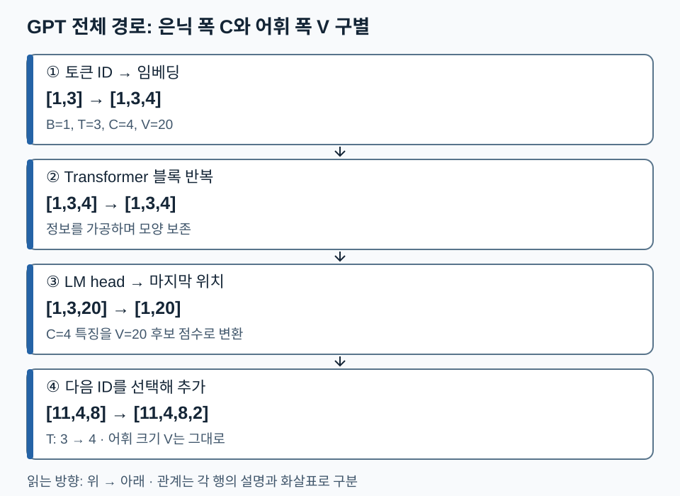
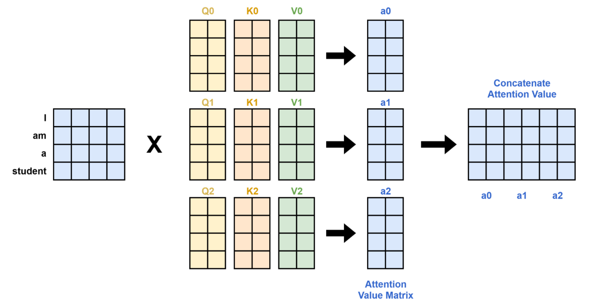
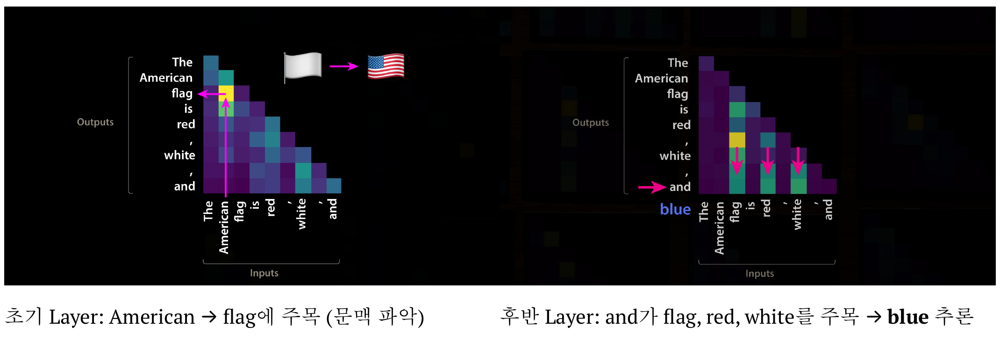

10. Multi-head와 GPT 전체 구조 — Attention의 출력은 어떻게 다음 토큰 예측으로 이어질까
전체 학습 안내 · 이전: Attention · 다음: GPT Layer들
GPT는 앞 문맥으로부터 다음 토큰의 분포를 계산하는 Decoder-only 언어모델입니다. 핵심은 Attention이 만든 문맥 벡터를 여러 블록에서 가공한 뒤, 어휘별 점수로 변환한다는 연결입니다. 이 단원은 구조 입문이며, LayerNorm·FFN·잔차의 상세는 다음 목차 ‘GPT Layer들’, 생성·샘플링은 ‘GPT 모델 입출력’에서 이어집니다.
원문의 120~124쪽을 중심으로 103쪽 전체 구조를 연결합니다. 09장은 Attention 내부 계산, 이 장은 병렬 head와 순차 블록의 연결을 다룹니다.
1. 세 층위의 값을 구별하기
| 층위 | 예시 모양 | 뜻 |
|---|---|---|
| 토큰 ID | [B,T] |
사전에서 토큰을 가리키는 정수 번호 |
| 문맥 표현 | [B,T,C] |
위치마다 현재까지 가공된 실수 특징 |
| 어휘 logits | [B,T,V] |
위치별 다음 토큰 후보 V개의 점수 |
B는 배치 크기, T는 문맥 길이, C는 은닉 폭, V는 어휘 크기입니다. Attention의 출력 폭 C는 정답 후보 수가 아닙니다. 마지막 언어모델 출력층(LM head)이 C차원 특징을 V개 점수로 바꿉니다. logits는 아직 확률이 아니며 softmax로 정규화할 수 있습니다.
2. 구조를 한 번 따라가기
교육용 설정 B=1,T=3,C=4,V=20을 사용합니다.
입력 [11,4,8] [1,3]
→ 임베딩과 위치 정보 [1,3,4]
→ Transformer 블록 반복 [1,3,4]
→ 최종 정규화와 LM head [1,3,20]
→ 마지막 위치 점수 선택 [1,20]
→ 다음 ID 선택·문맥에 추가 [1,4]
블록 안의 Attention은 다른 위치의 정보를 섞습니다. FFN은 각 위치의 특징을 비선형 변환합니다. 잔차 통로는 변환 전 표현과 변화량을 더하고, 정규화는 학습의 수치적 동작을 조절합니다. 여기서는 기본 구성의 역할만 연결합니다. 구체적인 순서가 Pre-Norm인지 Post-Norm인지는 구현과 교안의 해당 블록을 확인해야 합니다.
LM head가 토큰 2에 가장 큰 점수를 주었다면 greedy 방식은 2를 선택합니다. 입력은 [11,4,8,2]가 되고 길이가 4로 늘어납니다. 다음 반복에서는 이제 선택한 2도 조건으로 사용합니다. 95쪽의 자기회귀는 이 반복을 뜻합니다. 확률에서 무작위로 선택하는 샘플링은 greedy와 다른 선택 규칙이며 구조 자체는 공유할 수 있습니다.
아래 그림에서는 은닉 특징 축 C가 어휘 축 V로 바뀌는 곳과 생성 후 길이 T가 늘어나는 곳을 찾아보세요.

블록 반복에서는 모양이 유지되고 LM head에서 마지막 폭이 4에서 20으로 바뀝니다. 토큰을 추가할 때 바뀌는 것은 문맥 길이입니다. 수가 우연히 같더라도 축의 역할을 이름으로 구별하세요.
3. 학습과 생성의 같은 점·다른 점
학습 입력 [11,4,8]의 정답은 [4,8,2]입니다. 세 위치 logits 모두에서 각 정답 확률을 평가합니다. 첫 위치는 11을 보고 4를, 마지막 위치는 11·4·8을 보고 2를 맞힙니다. 정답이 이미 주어졌으므로 한 번에 계산할 수 있지만 causal mask로 허용 문맥을 제한합니다.
생성 시에는 새 정답이 주어지지 않습니다. 마지막 위치의 분포에서 직접 토큰을 선택하고 그 선택을 다음 입력에 넣습니다. 학습에서 이전 정답을 넣어주는 방식(teacher forcing)과 생성에서 자신의 선택을 이어 쓰는 방식의 차이가 있습니다. 학습된 모델도 한 번의 잘못된 선택 이후 다른 문맥을 따라갈 수 있습니다.
4. Head가 많다는 것과 깊다는 것
head는 한 층에서 서로 다른 투영으로 나란히 정보를 섞고, layer는 이전 층의 출력 표현을 차례로 입력받습니다. 교안 123쪽의 초기·후기 층 시각화는 특정 예시에 대한 관찰입니다. 모든 초기 층은 문맥만, 모든 후기 층은 다음 토큰만 처리한다는 엄격한 규칙은 아닙니다.
층을 두 번 통과한다고 토큰 수 T가 두 배가 되지 않습니다. 보통 블록은 잔차 덧셈과 반복을 위해 [B,T,C] 모양을 보존하고, 내부 정보가 바뀝니다. 마지막 LM head만 특징 축을 C에서 V로 바꿉니다. 이 구분을 먼저 해두면 다음 단원의 잔차·FFN 설명을 따라가기 쉽습니다.
5. 확인 질문
- 위 예시의 Attention 출력
[1,3,4]에서 가장 큰 좌표를 고르면 다음 토큰 ID가 되나요? - layer 수를 2에서 4로 바꾸되 B,T,C,V를 유지하면 최종 logits 모양은?
- 생성 과정에서 토큰 하나를 추가하면 어느 축이 바뀌나요? 어휘 크기도 증가하나요?
해설과 돌아갈 위치
- 아닙니다. 은닉 특징 4개는 어휘 후보 20개가 아닙니다. LM head를 거쳐 V개 logits를 만들어야 합니다. 1~2절.
[1,3,20]으로 같습니다. 반복 횟수와 표현은 바뀌지만 입력 길이·출력 어휘 폭은 유지됩니다. 4절.- 문맥 길이 T가 3에서 4로 바뀝니다. 어휘 크기 V=20은 그대로입니다. 2절.
다음 연결: 이제 GPT Layer들에서 블록 내부의 정규화·FFN·잔차를 자세히 읽고 같은 [B,T,C]가 어떤 연산을 거쳐 보존되는지 검증합니다. 실습 원문에서는 Chapter 3 Attention을 찾아 계산과 축을 대조하세요.
6. 한 층 안의 head와 여러 층을 직접 추적하기
학습 목표는 head 출력의 연결 축을 정하고, 층 수를 바꾸어도 외부 텐서 모양이 유지되는 이유를 설명하는 것이다. 선행 배경은 09장의 Attention 계산이다. 원문 120쪽에서 같은 I am a student 입력이 세 갈래 Q0/K0/V0, Q1/K1/V1, Q2/K2/V2로 들어간다.
아래에서 a0·a1·a2를 쌓는 방향을 먼저 찾는다.

세 head의 토큰 수는 모두 4이며 연결 후에도 4다. 예를 들어 각 head가 [4,2]를 내면 연결 결과는 [4,6]이다. 원문 그림 끝은 concat이고, 보충: 기본 Multi-head의 최종 출력은 여기에 W_O[6,C]를 곱해 [4,C]로 만든다. head 출력을 평균내는 연산과 다르다. C를 h개 같은 폭으로 나누는 구현에서는 C가 h로 나누어떨어져야 하지만 모든 설계가 이 폭 규칙을 강제하는 것은 아니다.
| 단계 | B=2, T=3, C=8, h=2 | 확인할 축 |
|---|---|---|
| 입력·투영 Q,K,V | [2,3,8] |
배치, 위치, 특징 |
| head 분리·축 교환 | [2,2,3,4] |
배치, head, 위치, head폭 |
| 점수 | [2,2,3,3] |
마지막 두 축은 query,key |
| Value 가중합 | [2,2,3,4] |
위치마다 head폭 4 |
| 연결·출력 투영 | [2,3,8] |
잔차에 더할 폭 8 |
Kᵀ는 전체 텐서 축을 뒤집는 것이 아니라 마지막 두 축만 바꾼다. softmax는 마지막 key 축이다. head 축으로 softmax하면 위치 간 참고 비율이라는 의미를 잃는다. 위 설정의 스케일 분모는 √4=2다. 메모리 배치가 바뀐 후 reshape/view의 연속성 조건도 실제 구현에서 확인한다.
121~123쪽의 head 지도
121쪽 GPT-2 Small은 세로 12 layers, 가로 12 attention heads per layer로 표시된다. 144개의 작은 지도는 144층이 아니다. GPT-2 공식 코드의 기본 설정 n_head=12, n_layer=12 및 block 함수로 대조했다. 122쪽 DeepSeek-R1은 61×128=7,808개 head 위치를 펼쳐 비교한다. 배포자 설정의 num_hidden_layers=61, num_attention_heads=128과 일치한다(확인 2026-11-09). 이는 해당 전체 모델 사례이며 증류 모델까지 같은 구조라는 뜻이 아니다. 작은 타일의 색만으로 정확도·계산량·개별 head 기능을 추정할 수 없다.
123쪽에서는 가로 Inputs, 세로 Outputs를 기준으로 어느 토큰이 어느 토큰을 읽는지 판단한다.

정정: 원문 초기 캡션은 ‘American → flag에 주목’이라고 적지만 강조된 칸은 flag 행, American 열이다. causal 문맥에서 flag가 앞선 American을 읽는 해석이 축과 맞는다. American이 미래 flag를 읽는 해석은 삼각형 제약과 충돌한다. 후기 지도는 and 위치가 앞의 flag·red·white를 참고하고 다음 blue 예측에 쓰일 표현을 만든다는 예시다. 특정 그림의 관찰을 ‘모든 초기 층/후기 층의 기능이 고정됨’으로 일반화하지 않는다. 원영상·강사의 추가 발언은 확인하지 않았다.
7. 124쪽 실습을 대체하는 내부 활동
원문에는 Chapter_3_Excercise_Attention.ipynb라는 안내만 있다. 전체 노트북을 실행했다고 가정하지 않고 다음 활동을 자료 안에서 수행한다.
- 길이 2, head 2개, head당 폭 1로 두고 Value는 두 head 모두
(2,6)으로 정한다. - head 0의 두 번째 query 가중치는
(0.75,0.25), head 1은(0.25,0.75)다. 각각의 문맥값을 계산한다. - 두 결과를 연결하고
W_O=[[1,0],[0,1]]로 투영한다. - 첫 query에는 causal mask가 있어 첫 Value만 볼 수 있다. 첫 위치의 연결 결과도 구한다.
예상 결과: 두 번째 위치는 head 0에서 0.75×2+0.25×6=3, head 1에서 0.25×2+0.75×6=5이므로 연결 (3,5), 항등 출력 투영 후에도 (3,5)다. 첫 위치는 (2,2)다. 결과는 토큰 두 개의 특징 두 개, 즉 [2,2]이고 토큰 네 개가 되지 않는다. 출력 투영을 [[1,1],[1,-1]]로 바꾸면 두 번째 위치는 (8,-2)다. head의 가중합은 비음수 가중치를 사용해도 출력 투영 뒤 값은 단순한 평균에 제한되지 않는다.
조건·한계: 이 활동은 가중치를 주고 concat을 확인하는 손계산이다. 가중치를 학습하는 과정, GPU 속도, 실제 모델 품질을 검증하는 실험은 아니다. 표준 head 분리의 다음 변형들은 19장 KV캐시와 GQA·MLA에서 별도로 다룬다.
페이지별 상세 대조
핵심 학습은 위 본문으로 완결된다. 아래는 개별 슬라이드의 그림·수치·정정 근거를 찾는 경로다.